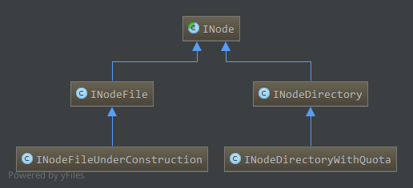
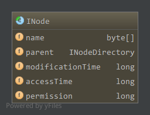
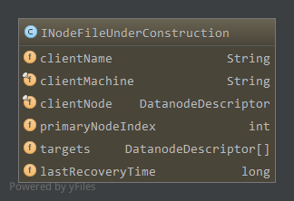
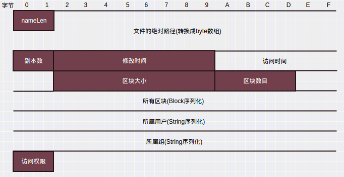
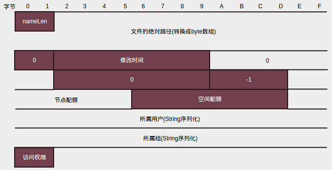
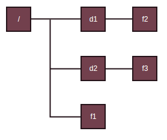
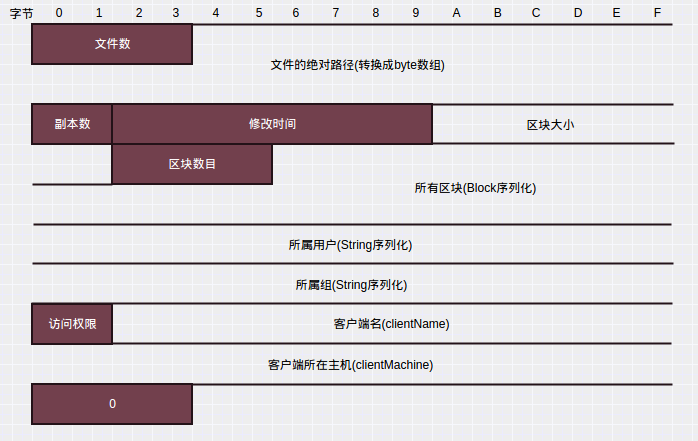
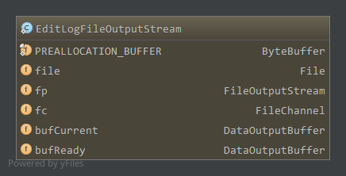

Hadoop版本:Hadoop-1.2.1
参考：《Hadoop技术内幕-深入解析Hadoop Common和HDFS架构设计与实现原理》
名字节点维护着HDFS文件系统中两个最重要的关系:
- HDFS文件系统的文件目录树，以及文件的数据块索引，即每个文件对应的数据块列表
- 数据块和数据节点的对应关系，即某一数据块保存在哪些数据节点的信息
以上，后文将第一个关系称为NameNode维护的第一关系，第二个称为NameNode维护的第二关系(技术内幕)。
第一关系会持久化到磁盘上，保存在命名空间镜像和编辑日志中。数据块和数据节点的对应关系则在名字节点启动后，由数据节点上报，动态建立，保持在内存中。
本文分析第一关系的相关实现，包括命名空间镜像和编辑日志的保存，加载，以及和SecondaryNameNode之间的交互等。
在分析命名空间镜像和编辑日志的保存，加载前，先分析涉及到的相关类。
1. 目录项INode
与Linux中的i-node类似，名字节点中，对文件和目录的抽象使用INode类进行表示，INode是文件和目录的抽象类，其子类中，INodeFile表示文件，INodeDirectory表示目录，另外，INodeFileUnderConstruction表示正在执行写操作(还未关闭)的文件，INodeDirectoryWithQuota表示具有配额的目录，配额包括目录下的目录项配额和总大小配额。
相关类图如下:

1.1 INode
INode是名字节点中文件和目录的抽象，成员属性如下

name，文件或目录名parent，父目录，对于根目录来说为空，其他的都有父目录modificationTime，修改时间accessTime，访问时间permission，访问权限
其中permission字段包含所属用户，所属组，以及Linux中权限表示形式(用户权限，组权限，其他用户权限，如755)，这三个信息分别保存在permission的不同位置，其中所属用户占41-63位，所属组占16-41位，权限占0-15位。使用INode内部类PermissionStatusFormat管理，PermissionStatusFormat是一个枚举是一个枚举
1.1.1 PermissionStatusFormat
1 | private static enum PermissionStatusFormat { |
如上，枚举值MODE在long开始偏移量为0，长度为16，即对应long整型中0-15位。GROUP开始偏移量紧接MODE为16，长度为25，对应16-40位。USER开始偏移量紧接GROUP为41，长度23，对应41-63位。
通过retrieve提取permission中对应的属性值，通过combine更新permission(参数record)中属性值为(bits)。
通过PermissionStatusFormat的retrieve获取的所属用户或所属组都是整型的，为实际用户名或组的序号，combine方法也一样，设置的值bits是整型，为对应的用户名和组的序号，而用户名或组序号到具体字符串之间的映射通过SerialNumberManager管理，如在INode中获取所属用户名1
2
3
4public String getUserName() {
int n = (int)PermissionStatusFormat.USER.retrieve(permission);
return SerialNumberManager.INSTANCE.getUser(n);
}
先从permission中提取用户名对应序号，如果没有序号，则还未设置用户名会抛出异常。然后使用SerialNumberManager获取序号对应的用户名。
设置所属用户名1
2
3
4protected void setUser(String user) {
int n = SerialNumberManager.INSTANCE.getUserSerialNumber(user);
updatePermissionStatus(PermissionStatusFormat.USER, n);
}
通过user在SerialNumberManager中查找对应的序号，如果没有则分配新的序号，即插入新的用户名。获取到用户名序号后更新permission中的属性。
1.1.2 SerialNumberManager
1 | class SerialNumberManager { |
如上，SerialNumberManager采用单例模式，实例为INSTANCE，其中真正管理映射的是usermap和groupmap对象，usermap管理用户名的映射，groupmap管理组名的映射，为SerialNumberMap类，管理了序号到具体名字的映射i2t和名字到序号的映射t2i。
通过名字查找序号时，如果没有该名字的序号，则分配下一个序号，插入到t2i和i2t中管理，这个对应设置用户名或组名时。
而获取用户名或组名时，通过序号查找名字，如果没有找到说明还未设置好，抛出异常。
INode很多方法都是抽象方法，到后面遇到时具体分析。
1.2 INodeFile和INodeFileUnderConstruction
INodeFile是文件的抽象，继承自INode，主要成员如下1
2
3
4
5
6
7static final FsPermission UMASK = FsPermission.createImmutable((short)0111);
static final short BLOCKBITS = 48;
static final long HEADERMASK = 0xffffL << BLOCKBITS;
//Format: [16 bits for replication][48 bits for PreferredBlockSize]
protected long header;
protected BlockInfo blocks[] = null;
如上，主要为header和blocks。
header在long型的64位中存储了副本数和区块大小两个属性，最高16 bit存储副本数replication，低48 bit存储区块大小。副本数的掩码为HEADERMASK。
blocks保存了该文件的所有区块信息，类型为BlockInfo，BlockInfo保存了一个Block所属的文件INodeFile信息，还保存了该区块所有副本所在的数据节点信息，并能因此访问副本所在数据节点上的所有区块信息。成员如下:1
2
3private INodeFile inode;
private LightWeightGSet.LinkedElement nextLinkedElement;
private Object[] triplets;
如上，inode为区块所属文件，triplets为Object数组，对于第i个副本，所在的数据节点为triplets[i]，对应数据节点信息类型为DataNodeDescriptor，第i个副本所属DataNodeDescriptor前一个区块信息BlockInfo为triplets[i+1]，后一个区块信息为triplets[i+2]。更多关于INodeFile和DataNodeDescriptor后面具体分析。
INodeFileUnderConstruction是正在写的还未关闭的文件，是INodeFile的子类，客户端写或者追加时打开的文件即为INodeFileUnderConstruction。
成员属性如下:

clientName，写文件的客户端，也就是该文件租约的所有者clientMachine，客户端所在主机clientNode，当客户端运行在数据节点上时该数据节点信息primaryNodeIndex，租约恢复时主数据节点targets，最后一个数据块的数据流管道成员lastRecoveryTime，租约恢复时间
如上，其中租约用于对文件写进行控制，为了防止多个客户端写一个文件，HDFS采用租约的机制，文件租约最多属于一个客户端，客户端获取到租约后定期更新租约，否则到期后经过一段时间(NameNode定期检测是否到期)会关闭该文件，恢复租约以供其他客户端使用。具体后面会分析。
客户端可能运行在DataNode上，此时clientNode保存了该DataNode信息。
对于INodeFileUnderConstruction来说，最后一个区块在NameNode内存中是没有其对应的数据节点信息的，该区块所有副本对应所在的数据节点也没有管理对应区块，因为还没创建完，在INodeFileUnderConstruction中通过targets保存最后一个区块的数据流管道成员，即正在写该区块的数据节点。后面会具体分析。
当NameNode定期检查时发现客户端长时间未更新租约，NameNode便会开始租约恢复(客户端也可以强行抢占另一个客户端占有某文件的租约,开始租约恢复)。从targets中选择第一个活着的数据节点，为主数据节点在targets中索引保存在primaryNodeIndex中，通过lastRecoveryTime记录租约恢复时间，为该INodeFileUnderConstruction分配一个固定的客户端NN_Recovery，并创建新的租约，原来的租约得以释放。然后在主数据节点心跳到来时发送区块恢复命令，区块恢复到一致状态时，原来的INodeFileUnderConstruction与NN_Recovery的对应关系解除。从而释放原来文件的租约，可以给新的客户端使用。具体见后面分析。
INodeFileUnderConstruction其他相关方法后面具体分析。
1.3 INodeDirectory和INodeDirectoryWithQuota
INodeDirectory是目录的抽象，继承自INode，成员如下1
2
3protected static final int DEFAULT_FILES_PER_DIRECTORY = 5;
final static String ROOT_NAME = "";
private List<INode> children;
如上，对于HDFS来说根目录为””，对应的INode中name长度为0。1
boolean isRoot() { return name.length == 0; }
目录下的目录项保存在children中，可以为任意INode子类。目录的父目录继承自INode，为parent成员，也是INodeDirectory类。
INodeDirectory大多是对目录项进行操作，如添加，删除，查找目录项等，如下1
2
3
4
5
6
7
8
9
10
11
12
13
14
15
16
17
18
19
20
21
22
23
24
25
26
27
28
29
30
31<T extends INode> T addNode(String path, T newNode, boolean inheritPermission) throws FileNotFoundException {
if(addToParent(path, newNode, null, inheritPermission) == null)
return null;
return newNode;
}
<T extends INode> INodeDirectory addToParent(String path, T newNode,
INodeDirectory parent, boolean inheritPermission) throws FileNotFoundException {
byte[][] pathComponents = getPathComponents(path);
assert pathComponents != null : "Incorrect path " + path;
int pathLen = pathComponents.length;
if (pathLen < 2) // add root
return null;
if(parent == null) {
INode[] inodes = new INode[2];
getExistingPathINodes(pathComponents, inodes);
INode inode = inodes[0];
if (inode == null) {
throw new FileNotFoundException("Parent path does not exist: "+path);
}
if (!inode.isDirectory()) {
throw new FileNotFoundException("Parent path is not a directory: "+path);
}
parent = (INodeDirectory)inode;
}
// insert into the parent children list
newNode.name = pathComponents[pathLen-1];
if(parent.addChild(newNode, inheritPermission) == null)
return null;
return parent;
}
如上，添加子节点时，通过addToParent实现，如果没有指定parent，会查找parent节点，然后通过addChild添加到parent目录下。
其中getPathComponents获取路径元素数组，如/c1/c2/c3得到的是数组元素{“c1”,”c2”,”c3”}，字符串转换成字节数组。
而getExistingPathINodes使用的比较多，方法声明如下1
int getExistingPathINodes(byte[][] components, INode[] existing)
根据传入的第二个参数existing获取路径元素components对应的INode对象。如果existing足够大能够存储所有存在或不存在的路径元素，则存在的INode对象从根INode(如上c1对应的INode)开始会从existing[0]开始存储，而如果existing不是足够大，则只有后面存在或不存在的INode会存储在exiting中以保证existing[existing.length-1]保存目标节点(如上c3对应INode)。
例如，给定路径/c1/c2/c3，不过当前只存在/c1/c2,得到路径元素数组components[“”,”c1”,”c2”,”c3”],则可能有以下情况:
getExistingPathINodes([“”,”c1”,”c2”], [?])，则existing为[c2]，最后一个元素c2存在
getExistingPathINodes([“”,”c1”,”c2”,”c3”], [?])，则existing为[null]，最后一个元素c3不存在
getExistingPathINodes([“”,”c1”,”c2”], [?,?])，则existing为[c1,c2]，最后两个元素都存在
getExistingPathINodes([“”,”c1”,”c2”,”c3”], [?,?])，则existing为[c2,null]，c2存在，c3不存在
getExistingPathINodes([“”,”c1”,”c2”], [?,?,?,?])，则existing为[rootINode,c1,c2,null]
getExistingPathINodes([“”,”c1”,”c2”,”c3”], [?,?,?,?])，则existing为[rootINode,c1,c2,null]
因此对应到addToParent中，传入的existing为两个元素的数组，因此inodes[0]将获取到父目录INode对象，如果不存在则不能添加，最终通过parent.addChild添加newNode到parent中，如下1
2
3
4
5
6
7
8
9
10
11
12
13
14
15
16
17
18
19
20
21
22
23
24
25<T extends INode> T addChild(final T node, boolean inheritPermission) {
if (inheritPermission) {//继承父目录的权限
FsPermission p = getFsPermission();
//确保用户有wx权限，在目录下有执行权限才能访问目录，写权限才能创建新的目录项
if (!p.getUserAction().implies(FsAction.WRITE_EXECUTE)) {
p = new FsPermission(p.getUserAction().or(FsAction.WRITE_EXECUTE),
p.getGroupAction(), p.getOtherAction());
}
node.setPermission(p);
}
if (children == null) {//父目录下还没有目录项，创建
children = new ArrayList<INode>(DEFAULT_FILES_PER_DIRECTORY);
}
int low = Collections.binarySearch(children, node.name);//查找是否已经存在
if(low >= 0)//已经存在添加失败，返回null
return null;
node.parent = this;//更新新节点的parent成员
children.add(-low - 1, node);//添加到parent的children中
setModificationTime(node.getModificationTime());//设置新节点的修改时间
if (node.getGroupName() == null) {//新节点的组即为父目录的组
node.setGroup(getGroupName());
}
return node;
}
如上，关于FsPermission另见Hadoop抽象文件系统
这里就介绍添加子节点的方法，其中getExistingPathINodes方法用的比较多，其他的方法后面用到时具体分析。
INodeDirectoryWithQuota继承自INodeDirectory，在目录的基础上增加了配额，配额有两种:节点配额和空间配额。节点配额用于限制目录下的目录项数量，保存在成员变量nsQuota中，空间配额用于限制存储在目录下所有目录项所占存储空间大小，保存在成员变量dsQuota中，成员如下1
2
3
4private long nsQuota; //namespace配额
private long nsCount; //当前namespace数量
private long dsQuota; //磁盘空间配额
private long diskspace; //当前所占磁盘空间
HDFS的dfsadmin工具提供了修改目录配额的命令，该命令会修改相应的成员变量。具体方法后面碰到具体分析。
命名空间镜像是某一个时间点内存元数据的真实组织情况，由FSImage实现。编辑日志则记录了该时刻以后所有元数据操作，如打开了一个文件，删除文件等等。
命名空间镜像位置由配置项dfs.name.dir指定，编辑日志由配置项dfs.name.edits.dir，两者都可以由多个目录，缺省都为/tmp/hadoop/dfs/name。其中编辑日志可以指定和命名空间镜像一样，这样镜像和日志文件存储在同一个目录下。对应的NameNode中目录类型有以下几种1
2
3
4
5static enum NameNodeDirType implements StorageDirType {
UNDEFINED,
IMAGE,
EDITS,
IMAGE_AND_EDITS;
如上，UNDEFINED未定义，IMAGE只存储镜像文件，EDITS只存储日志文件，IMAGE_AND_EDITS既存储镜像又存储日志文件(对应日志目录配置和镜像一样)。
与DataNode一样，NameNode也可存在多个存储目录。
2. FSImage
FSImage继承自Storage，Storage见DataNode本地存储管理。
FSImage管理着存储空间的生存期，负责命名空间镜像的保存和装载，和第二名字节点合作执行检查点过程。FSImage中还包含FSEditLog成员，如下1
protected FSEditLog editLog = null;
在FSImage存储目录下可能有以下文件1
2
3
4
5
6
7
8
9
10
11enum NameNodeFile {
IMAGE ("fsimage"),
TIME ("fstime"),
EDITS ("edits"),
IMAGE_NEW ("fsimage.ckpt"),
EDITS_NEW ("edits.new");
private String fileName = null;
private NameNodeFile(String name) {this.fileName = name;}
String getName() {return fileName;}
}
如上，通过枚举定义
fsimage，元数据镜像文件fstime，保存了最近一次检查点的时间，检查点一般由第二名字节点产生，是一次fsimage和对应edits合并结果edits，编辑日志文件，根据配置不同可能和fsimage不在一个目录fsimage.ckpt，新的fsimage文件，从第二名字节点通过HTTP方式获取到的新的镜像文件edits.new，新的编辑日志文件，第二名字节点发起新的检查点请求后，名字节点关闭当前edits文件，使用新的日志文件记录
当然还有Storage中的VERSION文件，in_user.lock锁文件。
2.1 命名空间镜像保存
命名空间镜像存储了某一个时刻名字节点内内存元数据的信息，包括目录树中所有INode信息，正在写入文件信息(INodeFileUnderConstruction)，和与安全相关的信息。
命名空间镜像的保存通过saveFSImage完成，将当前内存中命名空间镜像，保存到指定文件中1
2
3
4
5
6
7
8
9
10
11
12
13
14
15
16
17
18
19
20
21
22
23
24
25
26void saveFSImage(File newFile) throws IOException {
FSNamesystem fsNamesys = FSNamesystem.getFSNamesystem();
FSDirectory fsDir = fsNamesys.dir;
long startTime = FSNamesystem.now();
//创建输出流对象
DataOutputStream out = new DataOutputStream(new BufferedOutputStream(new FileOutputStream(newFile)));
try {
out.writeInt(FSConstants.LAYOUT_VERSION);//版本号
out.writeInt(namespaceID);//命名空间ID
out.writeLong(fsDir.rootDir.numItemsInTree());//目录和文件数目
out.writeLong(fsNamesys.getGenerationStamp());//当前数据块版本号
byte[] byteStore = new byte[4*FSConstants.MAX_PATH_LENGTH];
ByteBuffer strbuf = ByteBuffer.wrap(byteStore);
//保存根目录信息
saveINode2Image(strbuf, fsDir.rootDir, out);
//递归保存根目录所有子目录和文件信息
saveImage(strbuf, 0, fsDir.rootDir, out);
fsNamesys.saveFilesUnderConstruction(out);//保存正在写的文件
fsNamesys.saveSecretManagerState(out);//保存安全信息
strbuf = null;
} finally {
out.close();
}
LOG.info("Image file " + newFile + " of size " + newFile.length() +
" bytes saved in " + (FSNamesystem.now() - startTime)/1000 + " seconds.");
}
FSNamesystem是NameNode管理目录树，文件对应数据块信息，数据块和数据节点关系以及一些列相关操作的一个大类，与文件，数据块，数据节点相关的大部分操作都通过它完成，这里暂时不分析。FSNamesystem的dir成员为FSDirectory，管理了与命名空间镜像和编辑日志与目录树，文件和区块相关的操作，其中包含FSImage对象，而FSImage对象又包含FSEditLog对象。dir的吃恒源rootDir为目录树的根目录，如前描述名字为””，对应的名字长度为0，对应的类为INodeDirectoryWithQuota。
如上，首先保存头信息，包括4字节的版本号，4字节的命名空间ID，8字节的目录树中目录和文件数目(根目录INodeDirectoryWithQuota中的节点配额nsQuota)，8字节的当前数据块版本号。
头信息之后通过saveINode2Image保存根目录(INodeDirectoryWithQuota)信息，通过saveImage保存目录树中其他的子目录和文件信息。
通过saveFilesUnderConstruction保存正在写的文件(INodeFileUnderConstruction)信息。
通过saveSecretManagerState保存安全相关的信息。
2.1.1 saveINode2Image
saveINode2Image用于输出一个具体的INode对象，有可能为目录或者文件。如上使用saveINode2Image输出根目录信息，在saveImage中也会使用saveINode2Image输出具体的目录或文件。1
2
3
4
5
6
7
8
9
10
11
12
13
14
15
16
17
18
19
20
21
22
23
24
25
26
27
28
29
30
31
32
33private static void saveINode2Image(ByteBuffer name,
INode node, DataOutputStream out) throws IOException {
int nameLen = name.position();
out.writeShort(nameLen);
out.write(name.array(), name.arrayOffset(), nameLen);
if (!node.isDirectory()) { //文件
INodeFile fileINode = (INodeFile)node;
out.writeShort(fileINode.getReplication());//副本数
out.writeLong(fileINode.getModificationTime());//修改时间
out.writeLong(fileINode.getAccessTime());//访问时间
out.writeLong(fileINode.getPreferredBlockSize());//区块大小
Block[] blocks = fileINode.getBlocks();
out.writeInt(blocks.length);//区块数目
for (Block blk : blocks)//所有区块信息
blk.write(out);
FILE_PERM.fromShort(fileINode.getFsPermissionShort());
//用户名，组名，访问权限
PermissionStatus.write(out, fileINode.getUserName(),
fileINode.getGroupName(), FILE_PERM);
} else { //目录
out.writeShort(0); //副本数，目录没这个概念，0
out.writeLong(node.getModificationTime());//修改时间
out.writeLong(0); //访问时间，目录没有，0
out.writeLong(0); //区块大小，目录没有，0
out.writeInt(-1); //区块数，目录不存在区块，-1
out.writeLong(node.getNsQuota());//节点配额
out.writeLong(node.getDsQuota());//空间配额
FILE_PERM.fromShort(node.getFsPermissionShort());
//用户名，组名，访问权限
PermissionStatus.write(out, node.getUserName(),
node.getGroupName(), FILE_PERM);
}
}
如上，参数name为保存绝对路径的缓冲区，如在saveFSImage中保存根目录时传入的为strbuf为空，对应根目录name为空，长度为0，在saveImage中有相应处理。
按照以上代码可知对于文件，其在命名空间镜像中格式为

对于目录，其在命名空间镜像中格式为

因为目录没有副本数，访问时间，区块大小，因此都置0，区块数目为-1，没有区块相应的区块信息部分当然不存在。就是多了节点配额和空间配额两项，其他一致。其中如果目录为INodeDirectory没有配额，则相应的值继承INode为-1。
2.1.2 saveImage
saveImage保存目录下的所有目录和文件1
2
3
4
5
6
7
8
9
10
11
12
13
14
15
16
17
18
19
20
21
22private static void saveImage(ByteBuffer parentPrefix,
int prefixLength,
INodeDirectory current,
DataOutputStream out) throws IOException {
int newPrefixLength = prefixLength;
if (current.getChildrenRaw() == null)//没有目录项，该目录保存完成，返回
return;
for(INode child : current.getChildren()) {//先输出当前节点所有子节点
parentPrefix.position(prefixLength);//重新定位到父目录在缓冲区位置
parentPrefix.put(PATH_SEPARATOR).put(child.getLocalNameBytes());//添加子节点名字
saveINode2Image(parentPrefix, child, out);//保存子节点
}
for(INode child : current.getChildren()) {//递归输出子节点的目录项
if(!child.isDirectory())//文件，不需要继续
continue;
parentPrefix.position(prefixLength);
parentPrefix.put(PATH_SEPARATOR).put(child.getLocalNameBytes());//添加节点名，作为节点的子节点的父路径
newPrefixLength = parentPrefix.position();//更新新的父路径在缓冲区位置
saveImage(parentPrefix, newPrefixLength, (INodeDirectory)child, out)信息，i;//递归输出子节点目录下所有目录项
}
parentPrefix.position(prefixLength);
}
参数parentPrefix缓冲区保存父目录路径，prefixLength为父目录路径在缓冲区中长度。current为要保存的目录，out保存输出流。
如saveFSImage中调用1
saveImage(strbuf, 0, fsDir.rootDir, out);
strbuf为4*8000的缓冲区，指定最大路径长度为8000，路径上每个字符最大4个字节，该缓冲区可重复利用。根目录的父目录不存在，因此此时strbuf中没有保存任何信息，指定的prefixLength为0。通过FSDirectory对象fsDir的rootDir属性从根目录开始保存。
如上，输出目录时，先输出目录下的所有子目录项，即目录下的目录项为文件的通过saveINode2Image输出文件信息，为目录的通过saveINode2Image输出目录信息。然后对于目录下的每一个子目录递归调用saveImage输出该子目录下的目录项，最终完成整个目录树的输出。
输出时，文件或目录的名字通过缓冲区parentPrefix和指定的位置prefixLength动态更新。为了便于说明，这里举个例子
假设存在如下目录树

其中d为目录，f为文件。因此通过saveImage(strbuf,0,fsDir.rootDir,out)输出根目录下的节点时，先通过saveINode2Image输出目录项d1，d2，f1，调用saveINode2Image前更新缓冲区，在原来基础上添加对应的目录项名字。如输出d1调用saveINode2Image时，缓冲区中内容为/d1对应的字节。而继续输出d2时，又通过记录的父路径在缓冲区位置prefixLength重置到父路径处，缓冲区有效内容置空，然后添加d2的路径名，调用saveINode2Image时，缓冲区内容为/d2对应的字节，以此类推f1。
输出了根目录下的三个目录项后，因为存在子目录d1，d2，需要递归输出d1，d2下面的目录项。递归输出d1下的目录项时，先重置到父路径位置，然后添加d1路径名，作为输出d1目录下目录项时的父路径，并通过newPrefixLength记录此时新父路径在缓冲区的位置，调用saveImage输出d1下面的目录项，此时父路径为/d1。d1下面目录项输出完后，同样的d2也要先重置到父路径，添加d2的路径，作为新的父路径，调用saveImage输出d2的子目录项时，新的父路径为/d2。最终输出所有子目录下的节点。
在saveFSImage中通过saveINode2Image输出根目录，通过saveImage递归输出根目录的子节点后，调用saveFilesUnderConstruction输出正在构建中的文件信息
2.1.3 saveFilesUnderConstruction
1 | void saveFilesUnderConstruction(DataOutputStream out) throws IOException { |
如上，通过租约管理器获取处于构建状态的文件信息。租约管理器LeaseManager是FSNamesystem中的成员，管理了所有客户端对应的租约。管理的所有租约保存在成员sortedLeasesByPath中，通过更新时间排序。sortedLeasesByPath通过getSortedLeases方法获取，如上。
一个客户端对应一个租约Lease，租约Lease维护了客户端打开的所有文件，维护的文件保存在Lease的成员paths中，通过getPaths获取，如上。
获取打开文件路径后，通过FSDirectory的getFileINode获取对应的INode对象1
2
3
4
5
6
7
8
9
10INodeFile getFileINode(String src) {
synchronized (rootDir) {
INode inode = rootDir.getNode(src);
if (inode == null || inode.isDirectory())
return null;
return (INodeFile)inode;
}
}
INode getNode(String path) { return getNode(getPathComponents(path)); }
如上，从根目录rootDir开始查找，getPathComponents已经介绍过，获取path路径元素数组，getNode如下1
2
3
4
5private INode getNode(byte[][] components) {
INode[] inode = new INode[1];
getExistingPathINodes(components, inode);
return inode[0];
}
如上，getExistingPathINodes也已经介绍过了，传入的第二个参数只有一个元素，因此获取的是components中的最后一个路径对应的INode对象，如果不存在则返回null。
回到saveFilesUnderConstruction中，获取到对应的INode对象后，如果正常转换为INodeFileUnderConstruction对象，然后通过writeINodeUnderConstruction输出INodeFileUnderConstruction1
2
3
4
5
6
7
8
9
10
11
12
13
14
15
16static void writeINodeUnderConstruction(DataOutputStream out,
INodeFileUnderConstruction cons, String path) throws IOException {
writeString(path, out);//路径
out.writeShort(cons.getReplication());//副本数
out.writeLong(cons.getModificationTime());//修改时间
out.writeLong(cons.getPreferredBlockSize());//区块大小
int nrBlocks = cons.getBlocks().length;//区块数
out.writeInt(nrBlocks);
for (int i = 0; i < nrBlocks; i++) {//所有区块信息
cons.getBlocks()[i].write(out);
}
cons.getPermissionStatus().write(out);//所属用户，所属组，访问权限
writeString(cons.getClientName(), out);//客户端名
writeString(cons.getClientMachine(), out);//客户端所在主机
out.writeInt(0); // do not store locations of last block
}
按照上面的代码，可得INodeFileUnderConstruction的输出格式为

saveFSImage最后输出安全相关的部分对应的对象为DelegationTokenSecretManager，不再分析。
Hadoop提供了一个离线命名空间镜像查看器，可用于对fsimage文件进行分析，实现在org.apache.hadoop.hdfs.tools.offlineImageViewer中。(技术内幕)
2.2 命名空间镜像的读取
命名空间镜像的读取由FSImage.loadFSImage完成，将包含的元数据添加/更新到内存元数据中。
loadFSImage比较冗长，因为为了兼容以前的版本，读取到版本号后，要根据版本号做相应的处理(不同版本的格式不一样)，这里不全部分析了，只结合上面命名空间镜像保存过程分析当前版本(版本号-41)的读取过程。1
2
3
4
5
6
7
8
9
10
11
12
13
14
15
16
17
18
19
20
21
22
23
24
25
26
27
28
29
30
31
32
33
34
35
36boolean loadFSImage(File curFile) throws IOException {
...//版本号，命名空间ID，节点数等读取
if (imgVersion <= -12) {
long genstamp = in.readLong();
fsNamesys.setGenerationStamp(genstamp);//设置数据块版本号
}
String path;
String parentPath = "";
INodeDirectory parentINode = fsDir.rootDir;//根节点
for (long i = 0; i < numFiles; i++) {//循环读取所有节点
...//按照保存过程读取路径，副本数，修改时间，访问时间，数据块大小，数据块数，数据块，用户名，组名，访问权限等
if (path.length() == 0) {//根目录
if (nsQuota != -1 || dsQuota != -1) {//更新根目录配额
fsDir.rootDir.setQuota(nsQuota, dsQuota);
}
fsDir.rootDir.setModificationTime(modificationTime);//更新更目录修改时间
fsDir.rootDir.setPermissionStatus(permissions);//更新根目录访问权限
continue;
}
if(!isParent(path, parentPath)) {
parentINode = null;
parentPath = getParent(path);
}
//添加子节点
parentINode = fsDir.addToParent(path, parentINode, permissions,
blocks, replication, modificationTime, atime, nsQuota, dsQuota, blockSize);
}
this.loadDatanodes(imgVersion, in);//某些版本(-12,-3]保存了数据节点信息
this.loadFilesUnderConstruction(imgVersion, in, fsNamesys);//加载正在写的文件
this.loadSecretManagerState(imgVersion, in, fsNamesys);//加载安全信息
} finally {
in.close();
}
return needToSave;
}
如上，对于根目录直接更新，其下的子节点通过addToParent创建新的INode对象添加到目录树中如下1
2
3
4
5
6
7
8
9
10
11
12
13
14
15
16
17
18
19
20
21
22
23
24
25
26
27
28
29
30
31
32
33INodeDirectory addToParent( String src, INodeDirectory parentINode, PermissionStatus permissions,
Block[] blocks, short replication, long modificationTime, long atime,
long nsQuota, long dsQuota, long preferredBlockSize) {
INode newNode;
if (blocks == null) {//目录
if (nsQuota >= 0 || dsQuota >= 0) {//存在配额的目录
newNode = new INodeDirectoryWithQuota(permissions, modificationTime, nsQuota, dsQuota);
} else {//没有配额
newNode = new INodeDirectory(permissions, modificationTime);
}
} else //blocks不为空，文件
newNode = new INodeFile(permissions, blocks.length, replication,
modificationTime, atime, preferredBlockSize);
INodeDirectory newParent = null;
synchronized (rootDir) {
try {
newParent = rootDir.addToParent(src, newNode, parentINode, false);//添加到目录树中
cacheName(newNode);//缓存路径
} catch (FileNotFoundException e) {
return null;
}
if(newParent == null)
return null;
if(blocks != null) {
int nrBlocks = blocks.length;
INodeFile newF = (INodeFile)newNode;
for (int i = 0; i < nrBlocks; i++) {
newF.setBlock(i, namesystem.blocksMap.addINode(blocks[i], newF));//添加文件区块映射，添加区块信息BlockInfo到BlockMap中
}
}
}
return newParent;
}
如上，根据blocks和是否有配额创建相应的INode文件或目录对象，然后通过addToParent添加到目录树中，addToParent在前面INodeDirectory部分已经分析过了，parentINode可能为null这时需要查找对应的父目录的INode对象，并添加到父目录INode的children中。
之后，如果是文件，需要建立文件到区块间的映射，即创建BlockInfo对象，然后添加到INode对象的blocks中，同时会添加到FSNamesystem管理的BlocksMap对象中，BlocksMap中管理NameNode所有的区块信息。
3. FSEditLog
命名空间镜像很难和名字节点内存中的元数据时时刻刻保持一致，HDFS将对元数据的修改保存在编辑日志中，编辑日志和命名空间镜像一起，确定了当前时刻文件系统的元数据。当日志超过一定大小后，由第二名字节点获取命名空间镜像和编辑日志，合并成新的命名空间镜像。
FSEditLog主要成员如下1
2
3
4
5
6
7
8
9
10
11
12
13
14
15private ArrayList<EditLogOutputStream> editStreams = null;//输出流对象
private FSImage fsimage = null;//所属的FSImage对象
private long txid = 0;//事务ID，每一次编辑日志的记录对应一个ID，记录后增加
private long synctxid = 0;//已经同步的ID
// the time of printing the statistics to the log file.
private long lastPrintTime;
private boolean isSyncRunning;//当前有线程正在进行同步操作
//线程局部变量，每个线程编辑日志记录当前的ID值
private static final ThreadLocal<TransactionId> myTransactionId = new ThreadLocal<TransactionId>() {
protected synchronized TransactionId initialValue() { return new TransactionId(Long.MAX_VALUE); }
};
editStreams，保存着编辑日志的输出流对象，编辑日志可以配置多个目录，因此对应多个输出流txid，每一次编辑日志的记录都对应一个ID，记录操作增加该值synctxid，已经同步的ID，这之前的ID对应的操作都已经同步到文件中了。因为编辑日志写到流中，会先保存在缓冲区中，该ID表示已经从缓冲区中刷新到文件中的操作ID值isSyncRunning，当前是否有线程正在进行同步操作，日志的记录可以有多个线程，也为每个线程都有一个线程局部变量保存该线程日志记录操作所分配到的ID值。同样的每个线程都可以进行同步操作，同步操作执行时会将txid之前没有同步的所有记录都刷新到文件中，因此同步时其他线程不能进行同步操作。该变量则用于标记是否有线程正在进行同步操作。myTransactionId，线程局部变量，每个线程上次日志记录所获得的ID，会增加txid值
如上，编辑日志的输出通过EditLogOutputStream完成，EditLogOutputStream为抽象类，具体实现EditLogFileOutputStream
3.1 EditLogFileOutputStream
3.1.1 成员，构造
EditLogFileOutputStream成员如下

PREALLOCATION_BUFFER，预分配的缓冲区，大小1MB，填充-1file，对应的输出文件bufCurrent，当前使用的缓冲区，写日志时写到该缓冲区bufReady，同步时交换bufCurrent和bufReady缓冲区(交换前bufReady一般为null)，然后将bufReady中内容刷新到文件中
如下，构造1
2
3
4
5
6
7
8
9
10EditLogFileOutputStream(File name) throws IOException {
super();//初始化EditLogOutputStream中成员numSync和totalTimeSync为0
file = name;
bufCurrent = new DataOutputBuffer(sizeFlushBuffer);//初始缓冲区大小为512KB
bufReady = new DataOutputBuffer(sizeFlushBuffer);//初始缓冲区大小为512KB
RandomAccessFile rp = new RandomAccessFile(name, "rw");
fp = new FileOutputStream(rp.getFD());//为了追加数据打开
fc = rp.getChannel();
fc.position(fc.size());//定位到文件尾，追加
}
如上，父类中包含两个成员numSync记录同步操作的次数，totalTimeSync记录同步的总时间。两个缓冲区初始大小为512KB。
3.1.2 create
创建EditLogFileOutputStream对象之后，通过create方法写文件头并刷新，然后可以开始写日志记录1
2
3
4
5
6
7
8@Override
void create() throws IOException {
fc.truncate(0);
fc.position(0);
bufCurrent.writeInt(FSConstants.LAYOUT_VERSION);
setReadyToFlush();
flush();
}
如上，写日志记录时往bufCurrent中写，然后调用setReadyToFlush交换bufCurrent和bufReady，最终通过flush刷新到文件，即create会创建空的日志文件，并写文件头—版本号1
2
3
4
5
6
7public void flush() throws IOException {
numSync++;
long start = FSNamesystem.now();
flushAndSync();
long end = FSNamesystem.now();
totalTimeSync += (end - start);
}
更新同步次数，调用flushAndSync进行同步操作，最终更新totalTimeSync1
2
3
4
5
6
7@Override
protected void flushAndSync() throws IOException {
preallocate(); //如果必要的话预分配磁盘空间
bufReady.writeTo(fp); //写数据到文件输出流中
bufReady.reset(); //重置bufReady缓冲区
fc.force(false); //刷新文件输出流中的数据到文件中，false表示不更新文件元数据，因为预分配操作
}
如上，通过preallocate预分配磁盘空间，如果bufReady中要写到文件中的数据大于文件剩余空间，则通过文件通道循环往文件中追加PREALLOCATION_BUFFER来扩充文件大小。这里不贴出preallocate的代码了。
文件空间足够后将bufReady中的数据写到文件输出流中，此时bufReady已经和bufCurrent交换了，为先前所有写到bufCurrent中的数据，输出后重置缓冲区，然后通过文件通道的force方法强制文件输出流中的数据刷新到文件中，因为之前可能预先分配了空间，因此不需要更新元数据，force传入参数为false。
3.1.3 write
数据通过相应的write方法写到bufCurrent中1
2
3
4
5
6
7
8
9
10public void write(int b) throws IOException {
bufCurrent.write(b);
}
void write(byte op, Writable ... writables) throws IOException {
write(op);
for(Writable w : writables) {
w.write(bufCurrent);
}
}
如上第二个带操作码的write方法一般被FSEditLog日志记录时使用
3.2 记录日志
FSEditLog记录的日志类型有很多种，最终都会调用输出流的write方法写到LogEditLogFileOutputStream的bufCurrent中，这些日志记录都是以log开头，如对打开文件进行记录对应的方法为logOpenFile，如下1
2
3
4
5
6
7
8
9
10
11
12
13
14public void logOpenFile(String path, INodeFileUnderConstruction newNode) throws IOException {
UTF8 nameReplicationPair[] = new UTF8[] {
new UTF8(path),
FSEditLog.toLogReplication(newNode.getReplication()),
FSEditLog.toLogLong(newNode.getModificationTime()),
FSEditLog.toLogLong(newNode.getAccessTime()),
FSEditLog.toLogLong(newNode.getPreferredBlockSize())};
logEdit(OP_ADD,
new ArrayWritable(UTF8.class, nameReplicationPair),
new ArrayWritable(Block.class, newNode.getBlocks()),
newNode.getPermissionStatus(),
new UTF8(newNode.getClientName()),
new UTF8(newNode.getClientMachine()));
}
如上，log*相关方法最终都会调用logEdit，附带相应的操作码1
2
3
4
5
6
7
8
9
10
11
12
13
14
15
16
17
18
19
20
21
22synchronized void logEdit(byte op, Writable ... writables) {
if (getNumEditStreams() < 1) {//没有相应的输出流
throw new AssertionError("No edit streams to log to");
}
long start = FSNamesystem.now();
for (int idx = 0; idx < editStreams.size(); idx++) {//写到所有的日志输出流中
EditLogOutputStream eStream = editStreams.get(idx);
try {
eStream.write(op, writables);
} catch (IOException ioe) {//写到日志输出流中异常，移除该日志文件和相应的存储目录
removeEditsAndStorageDir(idx);
idx--;
}
}
exitIfNoStreams();
//获得新的ID
txid++;
//日志记录完成，当前线程更新ID
TransactionId id = myTransactionId.get();
id.txid = txid;
...//更新统计信息
}
如上，依次写到所有的日志输出流中，如果写过程中失败，则关闭日志文件从editStreams中移除该输出流，并移除对应的存储目录。写到日志输出流中通过write方法，先写操作码，然后写相应的序列化对象，都是写到bufCurrent缓冲区中。
输出日志记录后，更新当前线程的ID值和txid值。
对应到logOpenFile中，会记录操作码OP_ADD，然后依次输出打开文件路径path，该文件的副本数，访问时间，修改时间，区块大小，所有的区块，所属用户，所属组，访问权限，客户端名，客户端主机这些信息，可见文件的日志记录和命名空间镜像中对文件的记录很类似。
log系列有以下记录操作(技术内幕P344)
| 操作码 | 值 | 操作 | 记录内容 |
|---|---|---|---|
| OP_INVALID | -1 | 无效/结束 | N/A |
| OP_ADD | 0 | 创建文件 | 文件的绝对路径，副本数，修改时间，访问时间，区块大小，区块列表 权限(所属用户，所属组，访问权限)，客户端名称，客户端所在主机 |
| OP_RENAME | 1 | 改名 | 原目标绝对路径，修改后绝对路径，修改时间 |
| OP_DELETE | 2 | 删除 | 被删除目标绝对路径，删除时间 |
| OP_MKDIR | 3 | 创建目录 | 目录的绝对路径，修改时间，访问时间，权限(所属用户，所属组，访问权限) |
| OP_SET_REPLICATION | 4 | 设置文件副本数 | 文件的绝对路径，副本数 |
| OP_DATANODE_ADD | 5 | 增加数据节点 | N/A，不再使用 |
| OP_DATANODE_REMOVE | 6 | 删除数据节点 | N/A，不再使用 |
| OP_SET_PERMISSIONS | 7 | 设置权限 | 目标的绝对路径，新权限(所属用户，所属组，访问权限) |
| OP_SET_OWNER | 8 | 设置文件主 | 目标的绝对路径，用户名，组名 |
| OP_CLOSE | 9 | 关闭文件 | 文件的绝对路径，副本数，修改时间，访问时间，区块大小 区块列表，权限(所属用户，所属组，访问权限) |
| OP_SET_GENSTAMP | 10 | 设置数据块版本号 | 新数据块版本号 |
| OP_SET_NS_QUOTA | 11 | 设置节点配额 | N/A，不再使用 |
| OP_CLEAR_NS_QUOTA | 12 | 清除节点配额 | N/A，不再使用 |
| OP_TIMES | 13 | 设置访问或修改时间 | 目标的绝对路径，修改时间，访问时间 |
| OP_SET_QUOTA | 14 | 设置配额 | 目标的绝对路径，节点配额，空间配额 |
3.3 日志同步
如上日志记录时相应的log方法都只是写到LogEditLogFileOutputStream的bufCurrent中，没有刷新到相应的文件中，因此在调用相应log方法后一般都会使用logSync进行同步操作1
2
3
4
5
6
7
8
9
10
11
12
13
14
15
16
17
18
19
20
21
22
23
24
25
26
27
28
29
30
31
32
33
34
35
36
37
38
39
40
41
42
43
44
45
46
47
48
49
50
51
52
53
54
55
56
57
58
59
60
61
62
63
64
65
66
67
68
69
70public void logSync() throws IOException {
ArrayList<EditLogOutputStream> errorStreams = null;
long syncStart = 0;
long mytxid = myTransactionId.get().txid;//当前线程的事务ID
ArrayList<EditLogOutputStream> streams = new ArrayList<EditLogOutputStream>();
boolean sync = false;
try {
synchronized (this) {
printStatistics(false);//LOG记录统计信息
//事务ID大于已经同步的ID，即需要同步，而此时有其他线程正在进行同步操作，等待
while (mytxid > synctxid && isSyncRunning) {
try {
wait(1000);
} catch (InterruptedException ie) {
}
}
if (mytxid <= synctxid) {//当前ID小于已经同步的ID，即已经同步过了，返回
numTransactionsBatchedInSync++;
if (metrics != null) // Metrics is non-null only when used inside name node
metrics.incrTransactionsBatchedInSync();
return;
}
syncStart = txid;
isSyncRunning = true;//设置isSyncRunning为true，表示有线程正在同步
sync = true;
exitIfNoStreams();//没有输出流直接退出
for(EditLogOutputStream eStream : editStreams) {
try {
eStream.setReadyToFlush();//交换bufCurrent和bufReady缓冲区
streams.add(eStream);
} catch (IOException ie) {
if (errorStreams == null) {
errorStreams = new ArrayList<EditLogOutputStream>(1);
}
errorStreams.add(eStream);
}
}
}
long start = FSNamesystem.now();
for (EditLogOutputStream eStream : streams) {
try {
eStream.flush();//同步
} catch (IOException ie) {
if (errorStreams == null) {
errorStreams = new ArrayList<EditLogOutputStream>(1);
}
errorStreams.add(eStream);//同步错误，添加到errorStreams中
}
}
long elapsed = FSNamesystem.now() - start;
removeEditsStreamsAndStorageDirs(errorStreams);//移除错误的日志文件，并移除相应的存储目录
exitIfNoStreams();
if (metrics != null) // Metrics is non-null only when used inside name node
metrics.addSync(elapsed);
} finally {
synchronized (this) {
if(sync) {
//更新已经同步的ID为同步开始时的txid，因为交换bufCurrent和bufReady，刷新的是所有写到bufCurrent的日志
synctxid = syncStart;
isSyncRunning = false;//isSyncRunning置false
}
this.notifyAll();//通知处于等待同步操作状态的线程
}
}
}
如上，通过线程局部变量获取当前线程的最近日志记录的ID，每次日志记录时都会增加txid更新线程局部变量中对应的ID。
如果当前线程事务ID大于已经同步过的ID值synctxid，但是现在isSyncRunning为true即有线程正在同步，则等待同步线程退出。没有的话则开始同步过程。
而如果当前线程事务ID小于已经同步过的ID值synctxid，即已经同步过了，直接返回。
同步时，所有的日志输出流交换bufCurrent和bufReady缓冲区，新的日志将写到新的bufCurrent缓冲区中，而同步到文件中的日志记录则为此前所有写到bufCurrent中的日志记录。
交换后，通过日志输出流的flush方法进行同步，刷新到底层文件中，上面已经分析过。如果flush异常则移除对应的日志文件，日志输出流，并移除相应的存储目录。
最终更新已经同步的ID值为同步开始时的txid，同步过程中txid可能会变化，即有日志记录写到新的bufCurrent中，因此不能直接用txid值。然后将isSyncRunning置为false，最终通知可能处于等待同步的线程。
3.4 编辑日志的读取
编辑日志读取通过loadFSEdits完成，在读取编辑日志之前需要通过loadFSImage加载命名空间镜像，在某一命名空间基础上解析编辑日志更新NameNode元数据。
读取编辑日志时，按照编辑日志的保存格式进行读取。首先会读取文件头版本信息进行相应的验证。
对于每一个操作，先读取操作码，然后按照对应操作格式读取相应数据，进行相应的操作。
如对于打开文件OP_ADD和关闭文件OP_CLOSE，两者记录的内容很相似，放在一起处理。读取完文件的绝对路径，副本数，修改时间，访问时间，区块大小，区块列表，权限(所属用户，所属组，访问权限)之后，如果是打开文件OP_ADD，则还要读取客户端名称和客户端所在主机。
读取完信息后，如果是关闭文件，则先在目录树中删除原有文件(INodeFileUnderConstruction)，然后再添加新的INode对象1
2
3fsDir.unprotectedDelete(path, mtime);
INodeFile node = (INodeFile)fsDir.unprotectedAddFile(
path, permissions, blocks, replication, mtime, atime, blockSize);
关于目录树的很多操作都是通过FSDirectory的相关unprotected*方法完成，关于目录树相关的操作都是由FSDirectory负责。1
2
3
4
5
6
7
8
9
10
11void unprotectedDelete(String src, long mTime) {
List<Block> collectedBlocks = new ArrayList<Block>();
//从目录树中删除，更新所有祖先节点配额，更新父节点的修改时间，删除对应的区块和文件对应关系，解除第一关系
int filesRemoved = unprotectedDelete(src, collectedBlocks, mTime);
if (filesRemoved > 0) {
//释放文件对应的租约，将区块从FSNamesystem相关数据结构(blocksMap，corruptReplicas，pendingReplications)
//中移除，并添加到待删除区块列表recentInvalidateSets中
//第二关系
namesystem.removePathAndBlocks(src, collectedBlocks);
}
}
如上unprotectedDelete首先在目录树中删除目录，并更新其所有祖先节点的配额，父节点的修改时间，删除区块和文件的对应关系，即删除文件在NameNode的第一关系。这些工作由unprotectedDelete完成，不再贴出代码。
然后释放文件对应的租约，将其下所有的区块从FSNamesystem相关数据结构(blocksMap，corruptReplicas，pendingReplications)中移除，其中blocksMap为NameNode管理的所有区块信息BlockInfo，BlockInfo包含区块对应的文件，区块所有副本所在数据节点信息。corruptReplicas记录了NameNode中所有损坏的区块信息，为损坏区块到区块对应数据节点的映射，当区块所有副本都损坏时，该区块才损坏。pendingReplications记录了NameNode当前正在执行复制(副本数没达到要求)的区块，包含了该区块当前正在执行几个复制操作。
这些都属于FSNamesystem维护的NameNode第二关系相关数据结构，即数据块和数据节点相关的关系。其他的还有neededReplications，recentInvalidateSets，excessReplicateMap等
neededReplications维护了NameNode需要执行复制(还没执行，执行时会添加到pendingReplications中)的区块，会在有效副本数加正在复制的副本数之和大于等于期望副本数时删除，或者当读取neededReplications中待复制区块进行复制时发现区块对应文件不存在(如上unprotectedDelete方法删除了对应关系)时删除，因此unprotectedDelete中不删除neededReplications中的记录。
recentInvalidateSets维护了数据节点-需要删除的区块信息，添加到相应数据节点的invalidateBlocks集合中后，删除。
excessReplicateMap维护了数据节点-超出备份数的区块信息，对应的区块在数据节点上应该删除，添加在recentInvalidateSets中。
这些维护NameNode第二关系的数据结构之后会详细分析。
因此如上，在removePathAndBlocks中，移除第二关系后，将所有区块添加到recentInvalidateSets中，在特定线程中添加到指定的数据节点待删除区块列表invalidateBlocks中，该数据节点心跳到来时，发送相应的删除命令在数据节点上移除区块。
在NameNode中删除旧的文件后，通过unprotectedAddFile创建新的文件或目录，添加到目录树中，如果是文件建立文件到相应区块的关系，并添加到blocksMap中。
因此，对于文件关闭操作，读取相应信息后，先删除原来文件(INodeFileUnderConstruction)在NameNode中的相应记录，然后创建新的INode对象添加到目录树中，并根据相应的区块信息建立第二关系。这样便更新了NameNode中的元数据，其他的日志读取不再分析。